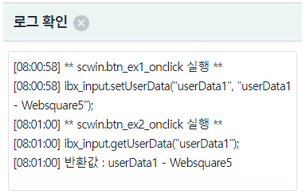
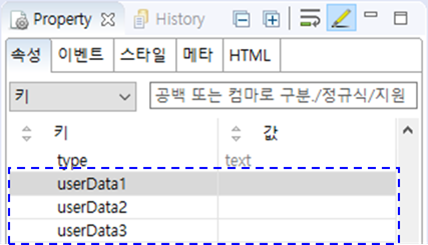

화면에 구성된 컴포넌트에 사용자 정의 값을 저장하는 기능인 userData 예제입니다. HTML의 dataset 기능과 유사하지만 dataset으로 구현한 기능은 아니기 때문에 웹스퀘어 API로 제어해야 합니다. 화면의 기능 구현 시 데이터를 컴포넌트에 할당해서 활용 할 수 있습니다. 예를 들면 화면의 상태 값이나 Generator로 구성된 반복 영역을 구분할 수 있는 값 등을 저장합니다. 이 기능은 property, method를 통해 접근할 수 있습니다.
InputBox에 스크립트로 userData1 할당하기
InputBox의 userData1 반환받기
이 예제는 영역 [로그 확인]의 textarea에 참고용 로그가 출력됩니다.
그림 1.로그 출력 영역 참고 이미지

InputBox에 사용자 데이터가 할당됩니다.
[로그 예시]
[08:04:04] ** scwin.btn_ex1_onclick 실행 **
[08:04:04] ibx_input.setUserData("userData1", "userData1 - Websquare5");
-
STEP2.1 "undefined"가 alert됩니다.
STEP2.2 버튼 실행1 을 클릭한 뒤라면 "userData1 - WebSquare5"가 alert됩니다.
[로그 예시]
[08:07:02] ** scwin.btn_ex2_onclick 실행 **
[08:07:02] ibx_input.getUserData("userData1");
[08:07:02] 반환값 : userData1 - Websquare5
웹스퀘어 스튜디오에서 속성을 지정하는 방법입니다.
스튜디오에서 컴포넌트를 선택합니다.
Property 뷰에 userData1, userData2, userData3에 값을 할당합니다.
그림 2.스튜디오의 컴포넌트 Property 뷰 - userData 참고 이미지

//id가 ibx_input인 컴포넌트의 예시입니다. //userData의 key는 "userData1", value는 "userData1 - Websquare5"로 할당합니다. ibx_input.setUserData("userData1", "userData1 - Websquare5");
//id가 ibx_input인 컴포넌트의 예시입니다. var strRet; //컴포넌트의 userData 중 key가 "userData1"에 할당된 value를 반환받습니다. strRet = ibx_input.getUserData("userData1");
userData1
userData2
userData3
getUserData( key )
setUserData( key , value )